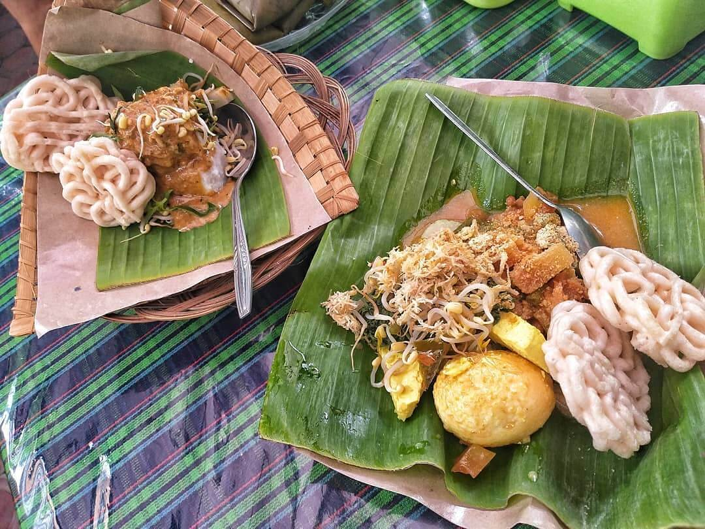
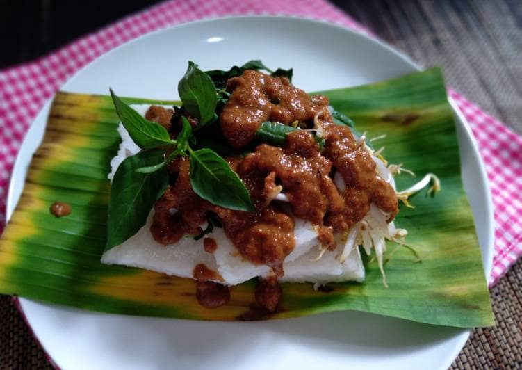
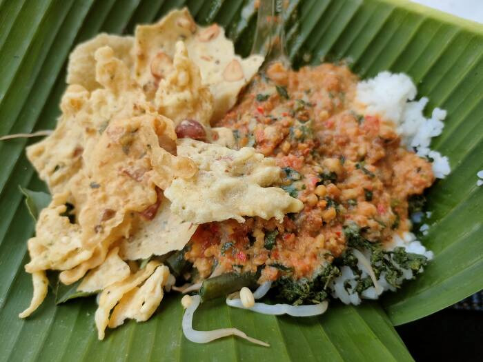
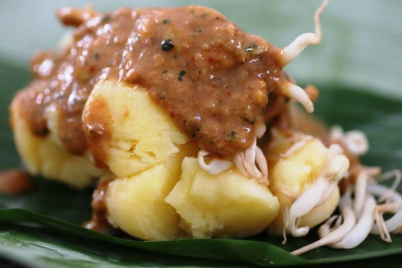
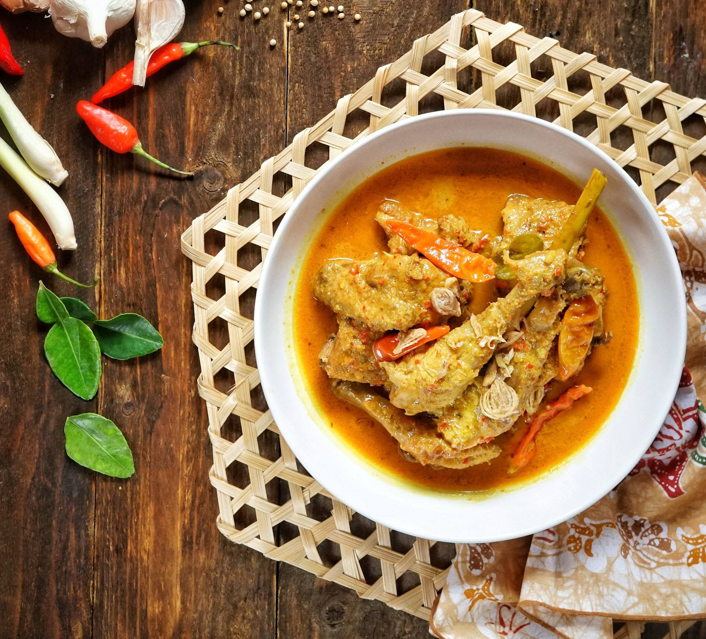
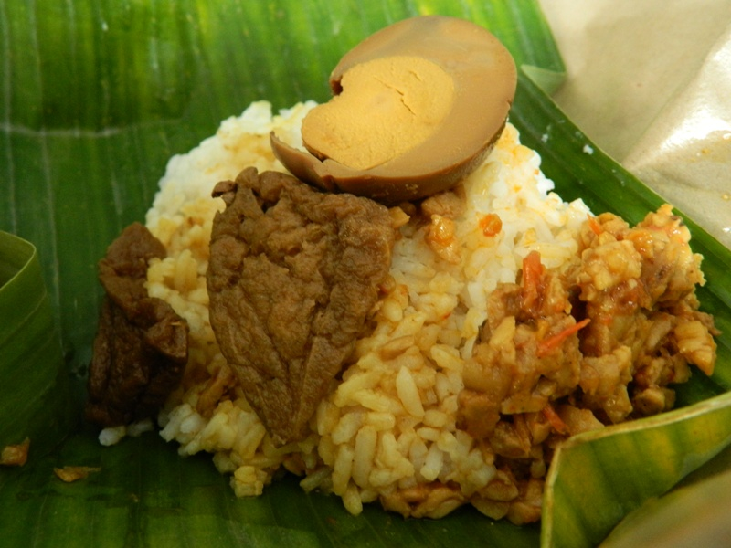

Come on, don't miss the chance to taste the deliciousness of Tulungagung's specialties! Every mouthful is full of mouth-watering flavors.

Sompil
A traditional dish made from lontong served with a savory coconut milk-based sauce, often served with boiled bean sprouts, pecel sauce, tempeh chips, young jackfruit vegetables, rempeyek and fried soybeans sprinkled on top.

Punten Pecel
A variation of pecel, where rice cakes (punten) are paired with boiled vegetables and drizzled with peanut sauce. The combination of soft punten and spicy pecel creates a unique taste.

Nasi Pecel
One of the most popular dishes in Tulungagung, it's made of rice served with various boiled vegetables, tofu, tempeh, and peanut sauce (pecel). This dish is often accompanied by fried crackers (rempeyek).

Capar Tape
A refreshing dessert made from fermented cassava (tape), usually served with peanut sauce. This food has a sweet and slightly sour spicy taste due to the fermentation process.

Ayam Lodho
A savory and delicious chicken soup cooked with coconut milk and a mixture of traditional Javanese spices. Usually served with rice or lontong.

Sega Bantingan
A simple but filling dish consisting of rice served with a variety of side dishes, usually including chili sauce, fried tempeh, fried egg or tofu.